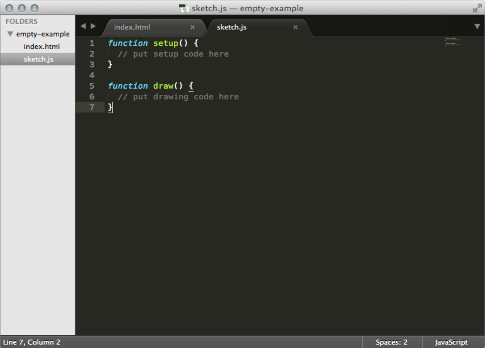
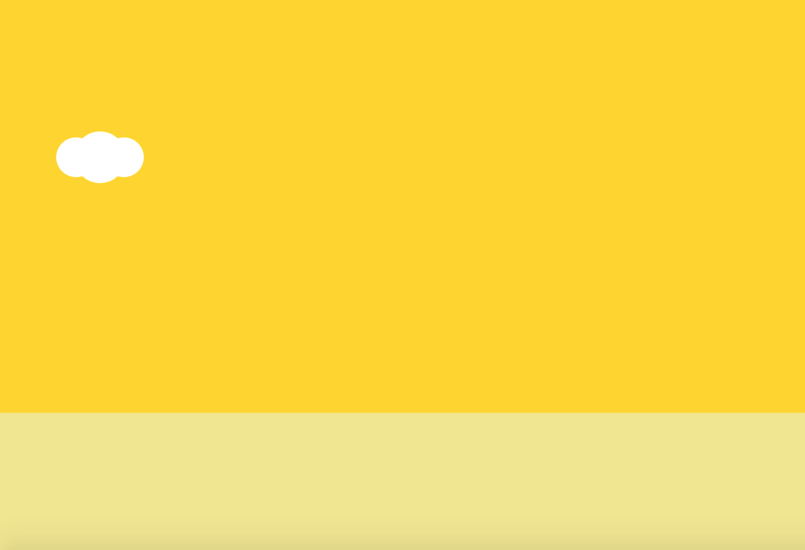
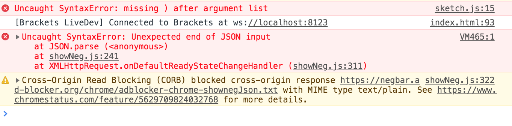
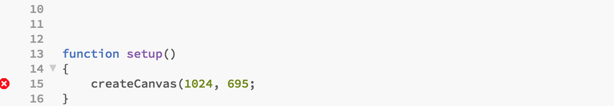
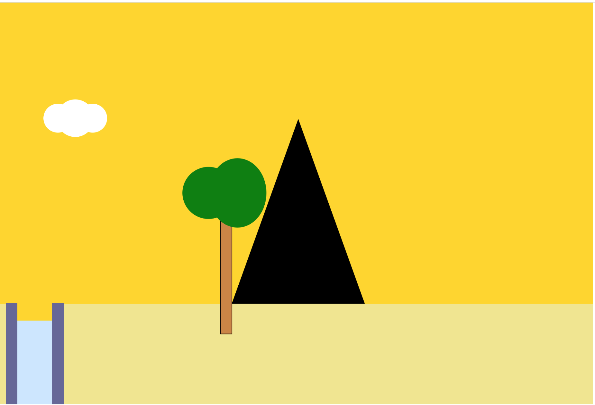
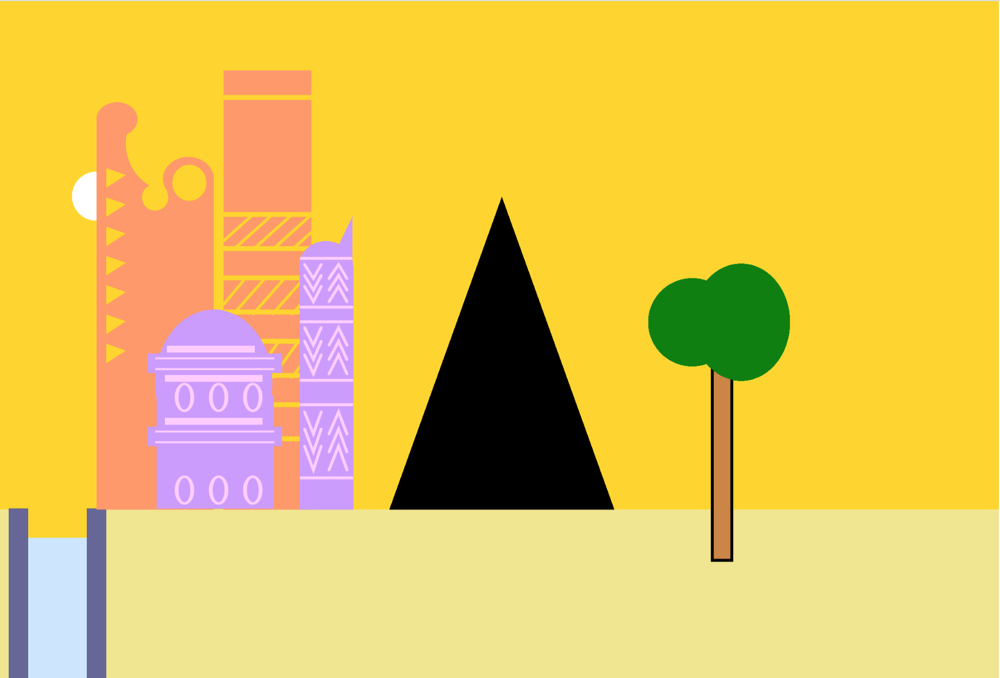
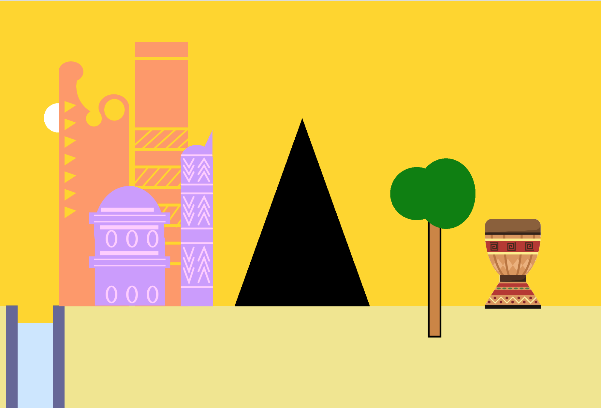

A great way to learn a programming language is to build something with it, and what could be more fun that building a game! (Check out the game I built here) If you’re reading this and you’ve just started learning to code, a quick note; a programming language is like a dictionary of words or ‘commands’ we can use when telling a computer what to do. The computer interprets these commands and converts them into instructions for its hardware to carry out.
For this project, I’m using a language called Javascript, and along with this, a Javascript library called p5.js. A library is a collection of code written by someone else but that we’re allowed to use in our programs. It makes the process of creating things a lot faster! For example, if you’re baking a cake, sometimes you can make it from scratch but sometimes, you can buy a pre-mix, and then add things from there to shorten the process, using a library is like that. P5.js is a really great library that is designed to make graphical Javascript (JS) applications and animations. You need to have a code editor installed, where you’ll write and edit your code. If you’re just starting out I’d highly recommend using Brackets, or Sublime Text. (Some popular code editors have a lot of buttons and lights, which I find can be intimidating when beginning.) Download and install Brackets here. Once you’ve done that the next step is to download the p5.js library. You should download the ‘Complete Library’ which you can find here. Ok, that’s a good starting point, let's dive into the code!
Open the downloaded p5.js folder by using the ‘Open Folder’ command under ‘File’ in your newly installed Brackets editor. This is what you should see if you click on the sketch.js file to the left. This is where we’ll be writing and editing all our code.

The sketch file contains two ‘functions,’ setup() and draw(). A function is a block of code that performs a specific task. You’ll learn what tasks these two functions carry out in just a bit. For now, if you’re using Brackets click the lightning symbol on the right-hand side of the screen. That opens a window in your browser (e.g. Chrome) and that gives you a live look at what you’ve created with your code. We haven’t written any code yet so that's why the screen is blank. At this point, I’m going to suggest you have a look at the p5.js get started page, focus on trying to understand what the setup, draw and create functions do. You can also watch this tutorial which will help you understand how to draw shapes with P5.js. Once you feel confident drawing we’ll begin to add the background scenery in our game.
In the sketch file create a canvas for your game scene by adding the createCanvas() function inside the setup() function underneath where it says ‘put setup code here.’ (Just as a reminder a list of functions and what they do can be found here.) Make the canvas 1024 x 695 pixels, by typing in createCanvas(1024, 695). The numbers 1024 and 695, are what we call ‘arguments.’ The function needs you to put these arguments inside it to do its job. Functions can take different types and different numbers of arguments. Next up choose the color of the sky by filling the canvas with any color you want! Add the background() function inside your setup() function as well. The background function takes RGB values, so making the background color of your canvas gold looks like this; background(255,215,0). Hooray! You have created the sky!!! Your screen should look something like this
Now we’ll add some clouds. Let's start by making our clouds with 3 ellipses, you can improve the look of your game a bit later on. The ellipse() function allows you to draw an oval shape, it takes the following arguments; an x-coordinate, a y-coordinate, a width, a height. The first two determine the ovals location, the second two determine its size. We add this ellipse function inside our draw() function, instead of in setup() function, we do this when we want to start adding drawings to the screen. Whoops, if you’ve added your ellipse to the code editor but aren’t seeing it appear in your canvas don’t panic. This is probably because of two things. Firstly, we’ve forgotten to give our ellipse some color. You can do this by using the fill() function which takes RGB values for arguments and fills any shape below it with that color. To make your clouds white use fill(255). You can find other RGB color values here. You can also vary the transparency of your clouds by using the ‘alpha value’ in the fill() function. Read about that here. Play around with this to give your clouds different colors. If you’d like to make your clouds the same shape as mine from the game example I built you can use the rect() function to draw a rectangle and then add two extra arguments to round its corners. You can read about that here. Here’s what you should be looking at.

Another reason you could be getting a blank screen is because you’ve made a mistake in your code. That's totally fine, everyone does! A great way to check this is by checking our console. The console is a tool developers use to check what's happening with their program in the browser (e.g Chrome.) To access your console, at the top of your browser click the View menu option, scroll down to developer and then choose Javascript Console. Once it's open you’ll see several tabs there, ‘ Elements, Console and Sources’ hopefully are some you see. Click on the console tag and take a look if you have any messages appearing in red? These messages will let you know if you have any errors and what line the error is on. Here’s an example of a mistake I made.


I forgot to add the closing bracket in the setup function. The console told me the line to look for the error on (line 15 in the sketch.js file) and what was the issue. (If you’re not using Chrome, do a quick search online on where to find the Javascript Console using your browser.) Hopefully, you’re back to seeing some colors and shapes in your browser. Next, we’ll create the ground by using the rect() function. This draws a rectangle to the screen (look at the p5js reference page again if you need a reminder on how this works.). Add this function to your draw function as well and make the x-coordinate be the start of the screen, and the height be about ⅓ of your height. For me a nice ground looks like rect(0, height/3, width, height/3), you can use the height and width commands in p5js. Ok, we should be looking good. Using this same logic add other things to your background scenery by drawing shapes. Use the triangle() function to draw a mountain, the rectangle and ellipse functions to draw some trees and so on. Have a look at my code here to get some ideas.
var floorPos_y;
function setup()
{
createCanvas(1024, 695);
background(255,215,0); // fill with gold
floorPos_y = height * 3/4;
}
// Draw Mountains.
fill(0);
triangle(400, height * 3/4,
400 + 230, height * 3/4,
400 + (230 / 2), height * 3/4 - 320);
// Draw trees.
stroke(0);
//trunk
fill(205,133,63);
rect(730,height * 3/4 * 6/10,20, 260);
//leaves
fill(0,128,0);
noStroke();
ellipse(710,(height * 3/4 * 6.7/10) -20,90,90);
ellipse(760,(height * 3/4 * 6.7/10) -20,100,120);
// Draw canyons.
noStroke();
fill(color('#666699'));
rect(10, 520, 100, 186);
fill(color('#cce6ff'));
rect(10 + 20, 550, 100 - 40, 190);
fill(255,215,0);
rect(10 + 20, 482, 100 - 40, 68);

So far we’ve only been looking at basic shapes. We'll take a look at some more complex shapes and designs next!
You might be feeling a bit frustrated by having to use basic shapes. The great thing is you don’t always have to. You can create your own custom shapes and designs. To do this you can play around with the vertex(), quadraticVertex, bezierVertex, beginContour() and endContour() functions! These can all be a bit trickier to master but can really help improve the look and feel of your game. As usual you can find them on the p5.js reference page, but if you’d like to read more in detail about this I’d recommend having a look at Rune Madsen's Programming Design Systems. If you’d prefer watching a video tutorial have a look at this. The buildings in the background of my game in the beginning have lots of detailed designs on them. I used the vertex() and line() functions to create most of these. I added them to the code so you can have a look (I’m sure there must be better ways of creating these, if you have ideas let me know!)

Creating your own designs is fantastic and fun when you’re in a creative mood. Sometimes, though it means writing lots of code or coming up with a formula to make it easier. If you don’t feel like doing this, there is an alternative to use in case of emergencies. You can add real images to your game! This can be a handy way to create background scenery in a hurry. It’s really important that you think about the look and feel of your game, and try as much as possible to keep it consistent. Sometimes adding images can make the game look disorganised, but other times it can save you a lot of time and energy. To add images, you’ll have to first find some images you’d want to use. There are lots of sites that provide you with free creative images including creative commons. Make sure to only use images that have been shared with the public or that you’ve purchased from their creators.. You’ll also need to use the p5.js loadImage() and image() functions. You can see some examples and read specifics about how to use these functions here. In my game, I really wanted to add a traditional drum, mainly because they are awesome and something I felt would add to the game. A lot of traditional drums have super detailed designs and I thought that might be really tiring to write the code for haha, so I used an image. Here’s what that looks like, when I add it to our code so far.

If you’ve reached this point, you’ve already achieved quite a lot! You’re on your way to creating an incredible game. Play around with changing the background and making it your own. Maybe add images to the canvas or find other interesting functions to use from the reference page. I’ll be splitting this topic up into about 3 different parts. In the next post we’ll learn how to create a unique game character and how to make it move around the screen. We’ll also start to look in detail at how to create our own functions instead of only using the one’s given to us by p5.js. This will help our game character interact with its surroundings. Exciting! Hope you enjoyed this first part and that you come back again for the second one!
The drum image I used is from verctorportal.com
Have any specific questions? Send me an email here, or find me on twitter.